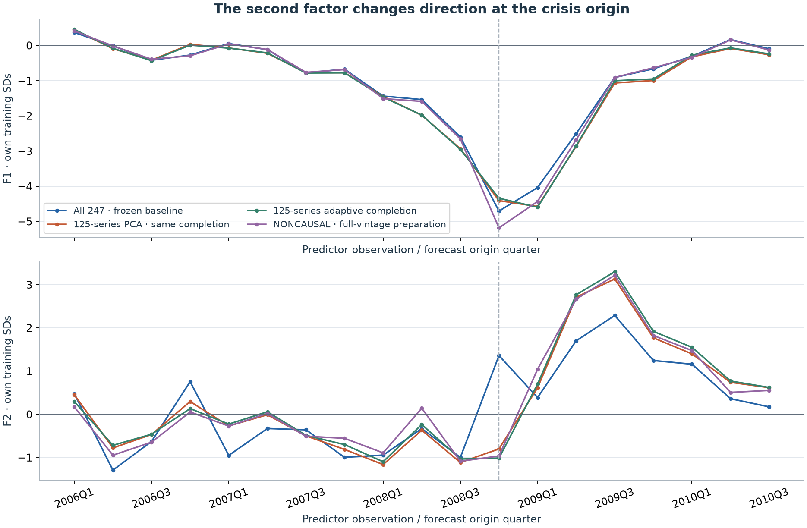
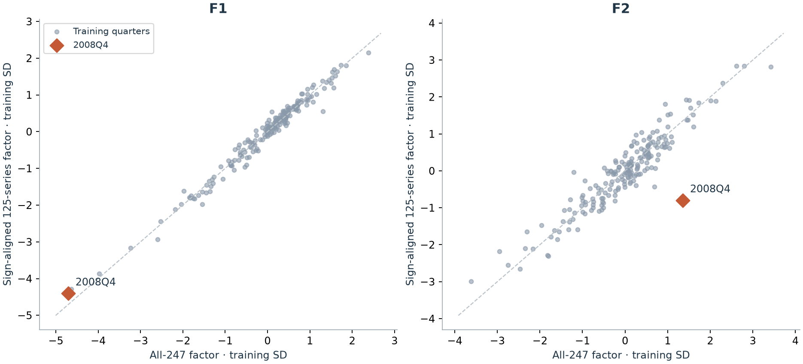
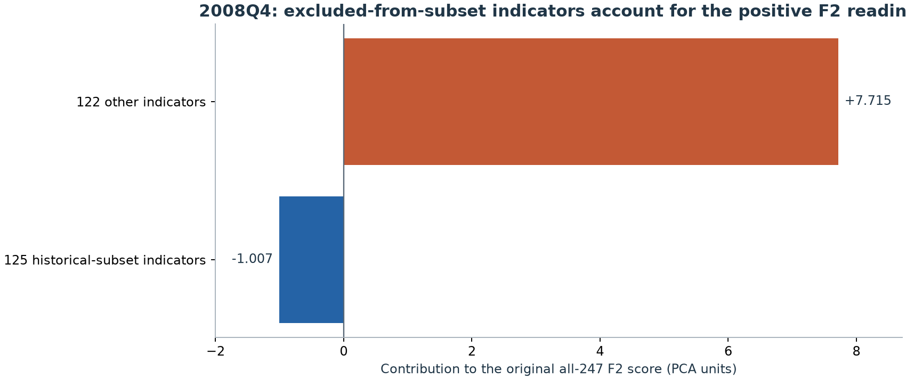
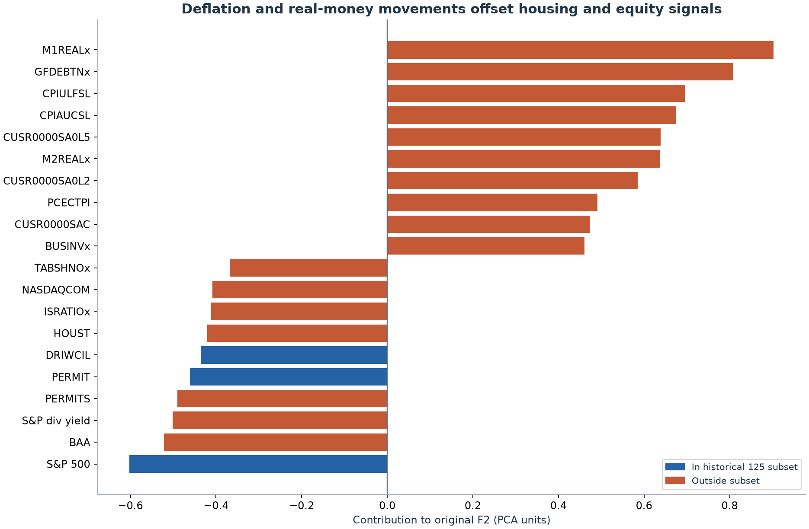
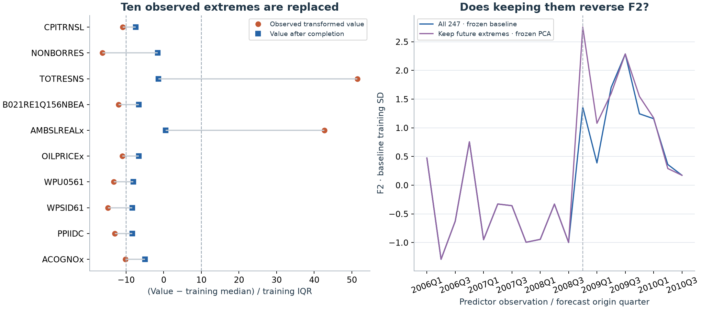
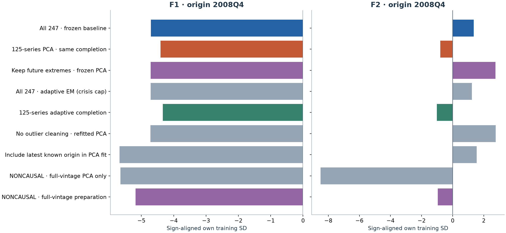
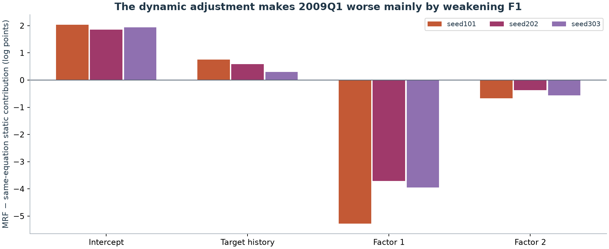
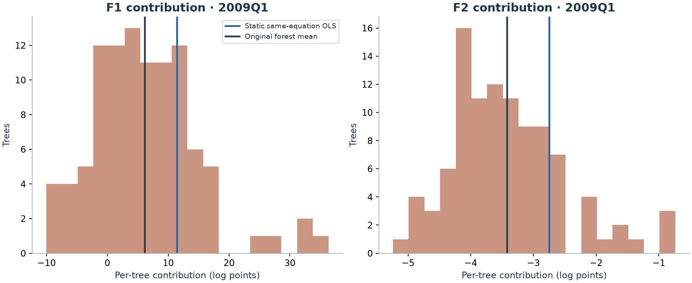
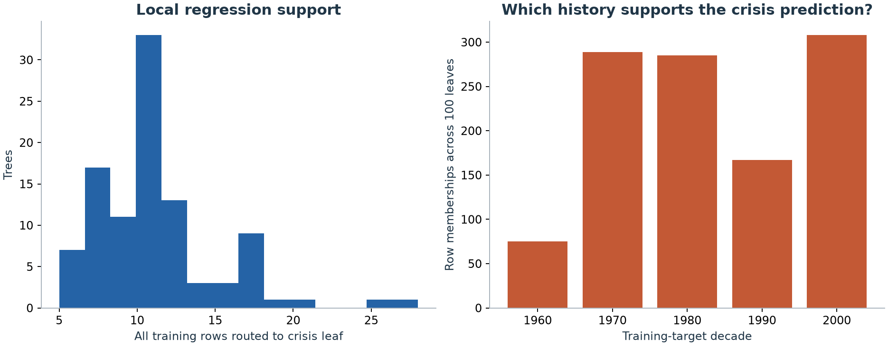
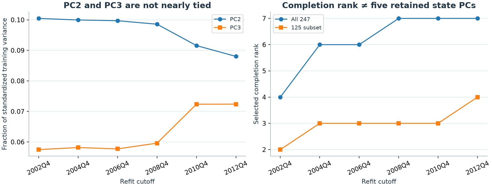

POST-HOC INVESTIGATION · ORIGINAL BENCHMARK FROZEN
Why does our MRF miss the crisis?
We found a concrete tail difference in the leading-factor construction. F2 is +1.36 training SDs using all 247 series, but -0.80 under subset-only PCA after training-sign alignment. Training correlation: 0.944. The original author's exact factor pipeline remains unknown.
The critical input is 2008Q4, used to predict 2009Q1. This is an origin-date analysis, not an extra quarter of foresight. Independent base-R checks reproduce the factor arithmetic. The frozen forest replay reproduces every coefficient and forecast exactly.
A separately labeled NONCAUSAL control uses all later predictor data through 2018Q2 and also reverses F2, to -0.96 pre-cutoff training SDs. This makes factor-estimation timing another live hypothesis, not an acceptable replacement benchmark or a claim about the original author.
Research note · Audit and provenance · Factor snapshot · Input contributions · Removed observations
Interpretation boundaries
This is diagnosis, not a newly selected model. No alternative forests are fitted and no variant forecast losses are used to choose a recipe. Subset PCA changes what the factor measures; it is not merely a sign change. Cleaning, eligibility, completion and the learned coefficient map are distinct mechanisms. The actual original paper pipeline has not been recovered. Ten-figure captions distinguish exact accounting, numerical verification and hypotheses.
High training correlation hides a crisis-tail difference

PCA signs are aligned using training observations only; each factor is scaled by its own training SD. The dashed line is 2008Q4, used to forecast 2009Q1. The 125-series rule changes PCA eligibility, not the fixed benchmark. It is a source-motivated diagnostic, not proof of the author's rule. Individual component comparisons are not rotation-invariant.Correlation is not a guarantee about rare states

The same 2008Q4 row sits away from the training relationship, especially for F2. These are unsupervised factor comparisons: no unemployment outcome was used to align signs, scale scores, or select a component.Where the positive F2 score comes from

Exact accounting under the original loadings: 125-subset columns contribute -1.007, other columns +7.715, summing to +6.708. This grouping is not the same as refitting subset PCA, and contributions are not causal effects.Largest positive and negative F2 contributions at 2008Q4

Exact value × loading terms, after the benchmark's cleaning and completion. Large positive terms include M1REALx, GFDEBTNx, price indexes and M2REALx. Negative terms include equities, permits and housing. All terms, descriptions and exact-mnemonic metadata coverage are in factor-drivers.csv.Cleaning removes policy/price extremes, but is a separate mechanism

Left compares actual transformed inputs with their imputed replacements. Right holds all training data, moments and PCA loadings fixed, and merely stops screening future observations. This is an input-sensitivity check, not a new forecast model.Nine explicitly labeled preparation diagnostics

The subset-only variant preserves all original completed raw indicators and MAFs; adaptive variants change completion. The latest-origin variant fits unsupervised representations through the already-observed 2008Q4 covariates rather than 2008Q3. The two NONCAUSAL controls use later predictor data through 2018Q2 and are inadmissible as deployable benchmarks. The all-panel adaptive EM reaches its 50-iteration cap in the crisis refit. None is chosen by forecast loss or substituted into the benchmark.The immediate forecast failure is not only the F2 input

Every bar is saved forecast accounting with identical factor coordinates and the same four slope terms. The forest boosts its intercept but lowers F1's positive contribution enough to outweigh that boost. A questionable F2 crisis signal and the learned coefficient map are distinct links in the failure chain.The actual crisis trees, not a hypothetical refit

Storage-only 2008Q4/seed-101 replay matches all eight forecasts and every coefficient exactly. Each tree is routed with its original native normalization and saved leaf paths; all row partitions and within-leaf coefficient blocks are checked. Histograms show model-component dispersion, not predictive uncertainty.Training observations behind the crisis forecast

These are full training-leaf memberships, including rows not selected for split construction. They are not independent observations across trees. Neighbor smoothing and the OLS prior contribute additional information outside the listed leaf rows; decades are calendar bins, not official recession labels.Separate numerical failure from a different factor definition

All six frozen states and all 1,482 per-series MAF constructions are checked. Independent base R verifies crisis-window transformations, masks, thresholds, PCA scores/loadings, all 247 MAF bases, and adaptive completion on both panels. A separated eigenvalue pair weakens a numerical near-tie explanation, not every possible rotation or preprocessing explanation.
Read the full findings and reproduction details.